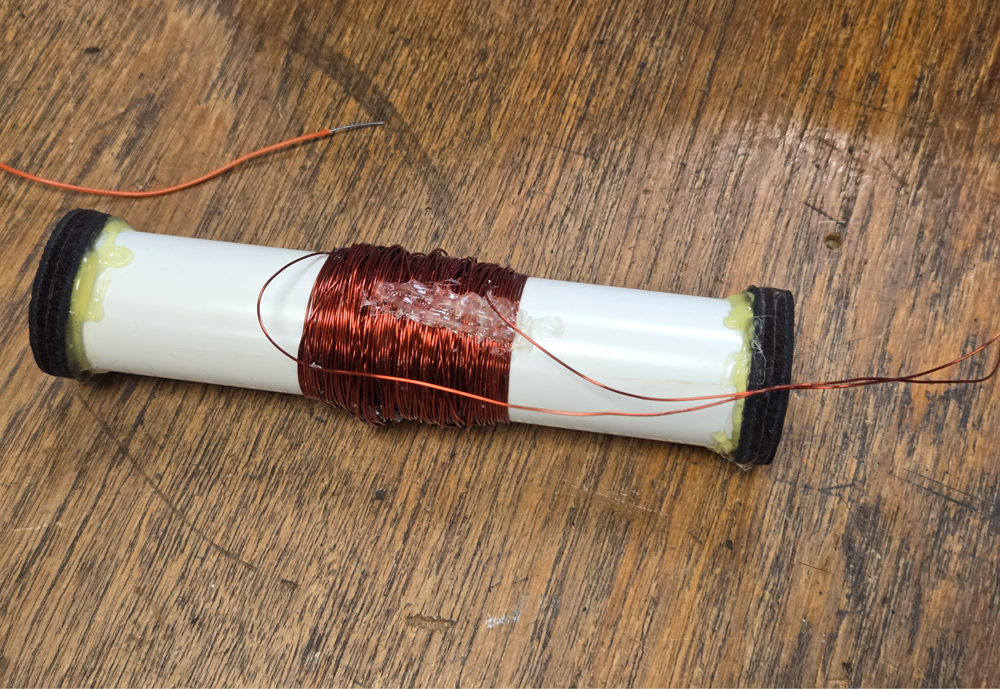
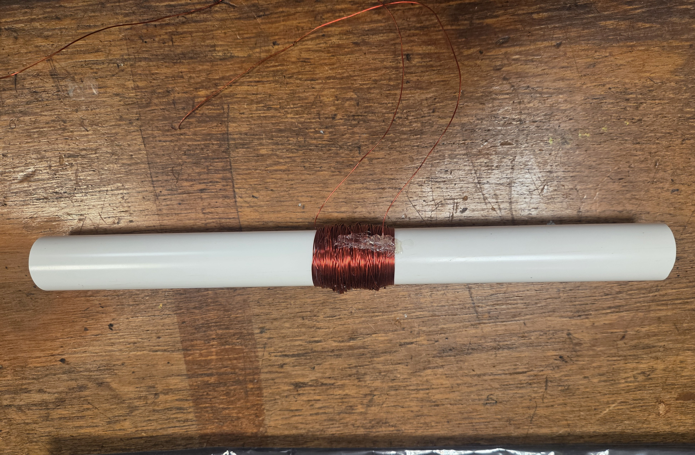

Following a brief simulation test, we confirmed that the Raspberry Pi Pico was able to successfully read and process data from both the GPS and accelerometer modules. The results obtained from the accelerometer were reasonable and within expected ranges however, the GPS was not picking up any signal which was attributed to the indoor environment.
Week 2
During the second week, the project transitioned from individual component testing to integrated system development. The aim was to stabilize the power output for electronic consistency and to successfully interface the accelerometer and GPS modules simultaneously to record a comprehensive dataset.
Software
Following the successful completion of the GPS and accelerometer modules, we focused on software integration. The Raspberry Pi Pico was programmed to read data from both modules.

Hardware

To make the generated power usable for electronics, the coil was connected to a rectifier bridge to convert AC voltage to DC voltage. Because the resulting DC voltage was unstable and insufficient, a supercapacitor and an MT3608 boost converter were added to the circuit. The team discovered the boost converter required approximately 20 full anticlockwise turns to begin stepping up the voltage. It was noted that the high capacitance meant it took roughly ten minutes to charge the system to the required 3.3V.

The MPU6050 accelerometer was integrated via I2C at 400 kHz, although initial detection failed due to the Pico being improperly seated on the breadboard. During testing, the original GPS module overheated and failed, requiring a replacement with a backup module. By the end of the week, we had verified a combined script that successfully logged latitude, longitude, speed in m/s, 3-axis acceleration, and calculated total distance.